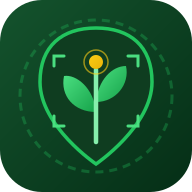

AgriScan AI - कृषि सहायक
ऑफ़लाइन खेत में बिना इंटरनेट काम करता है
किसान मोबाइल लॉगिन
बिना पासवर्ड केवल 10 अंकों का मोबाइल नंबर डालें
रामेश्वर पाटीदार
नमी: 76% | हवा: 9.5 km/h • स्प्रे स्कोर: 92/100
मंडी भाव, खाद मात्रा, स्प्रे समय या सरकारी योजना पूछें
म.प्र., पंजाब, महाराष्ट्र, उ.प्र., दक्षिण व पूर्व की समस्याओं का AI + ड्रोन/CHC समाधान
फसल रोग एवं पोषण जांच
पौधे की पत्ती का लाइव फोटो लें या 360° वीडियो बनाएं — सटीक 3-चरणीय पोषण उपचार पाएं।
मंडी भाव (e-NAM)
सोयाबीन ₹5,120/क्विं (+MSP)खाद गणक व मौसम
NPK बोरी व स्प्रे विंडोसरकारी योजना व बीमा
PM-KISAN • 72h बीमा दावाकिसान ई-मित्र रडार
उज्जैन: 38 खेतों में अलर्टमृदा कार्ड
जिंक की कमी (0.45 ppm)सक्रिय पर्चा
जिंक सल्फेट 21%अधिकृत कृषि स्नातक
प्रमाणित बीज, समाधान व बही-खाताKVK वैज्ञानिक
2-घंटे SLA विशेषज्ञहालिया फसल जांच इतिहास

सोयाबीन (Soybean JS 20-34)
जिंक की कमी • 94% सटीकता • 2.0 एकड़

रोग एवं पोषण जांच के लिए फोटो खींचें या वीडियो लें
1. डेटा अपलोड एवं खेत प्रोफाइल सिंक
मल्टीस्पेक्ट्रल इमेज डेटा अपलोड, GPS व मृदा कार्ड (Zn: 0.45 ppm) लिंक।
2. ऑप्टिकल एवं स्पेक्ट्रल सिग्नल विश्लेषण
RGB चैनल पृथक्करण, क्लोरोफिल अवशोषण सूचकांक व पत्ती चमक सामान्यीकरण।
3. फसल के शारीरिक एवं पोषण लक्षणों की जांच
शिराओं के बीच पीलापन (Interveinal Chlorosis), ऊतक क्षय व कीट प्रभाव स्कैन।
4. AI रोग भविष्यवाणी एवं CIB&RC सत्यापन
न्यूट्रिशन-फर्स्ट प्रोटोकॉल व राज्य स्तरीय रसायन प्रतिबंध जांच लागू।
सटीक पुष्टि के लिए 2 प्रश्न
खेत की स्थिति देखकर सही विकल्प चुनें:
प्रश्न 1: पीलापन मुख्य रूप से किस हिस्से की पत्तियों पर दिख रहा है?
प्रश्न 2: क्या पत्तियों के पीछे कोई फफूंद (पाउडर/जाला) है?
जिंक सल्फेट (ZnSO4 21% हेप्टाहाइड्रेट) + बुझा हुआ चूना
जिंक सल्फेट 500 ग्राम + 250 ग्राम बुझा हुआ चूना (या 1 किग्रा यूरिया) प्रति 200 लीटर पानी प्रति एकड़ छिड़कें।
जिंक सोल्युबिलाइजिंग बैक्टीरिया (ZSB बायो-फर्टिलाइजर)
1 किग्रा ZSB प्रति एकड़ 50 किग्रा सड़ी हुई गोबर की खाद (FYM) के साथ मिलाकर मृदा में दें।
रासायनिक कीटनाशक की आवश्यकता नहीं (Zero Chemical)
यह एक शुद्ध सूक्ष्म पोषक तत्व विकार है। अनावश्यक कीटनाशक रसायनों के प्रयोग से बचें।
🌿 इस रोग/कमी हेतु तैयार डॉक्टर क्योर किट उपलब्ध
चिलेटेड पोषण + जैविक रक्षक + अनुमोदित अणु (डिजिटल पर्चा आधारित 1-क्लिक डिलीवरी / पे-आफ्टर-हार्वेस्ट क्रेडिट)
विशेषज्ञ परामर्श जारी है
सटीकता 48% होने के कारण मामला वरिष्ठ पादप रोग विशेषज्ञ को स्थानांतरित किया गया है।
डॉ. सुरेश वर्मा (Dr. Suresh Verma)
वरिष्ठ कृषि वैज्ञानिक (KVK, इंदौर)
पादप रोग एवं पोषण विशेषज्ञमृदा स्वास्थ्य कार्ड (Soil Health Passport)
खेत का विवरण (Linked Farm Parcel)
खसरा क्रमांक: 241/2 | रकबा: 3.5 एकड़
मिट्टी का प्रकार: काली चिकनी मिट्टी (Medium Black Clay)
सिंचाई साधन: ट्यूबवेल + ड्रिप सिंचाई
हवा की गति (9.5 km/h < 12 km/h) और वर्षा संभावना कम है। पत्तियों के रंध्र खुले हैं, पर्णीय पोषण (ZnSO4) 95% अवशोषित होगा।
संतुलित खाद (NPK + जिंक) बोरी गणक
मृदा कार्ड लिंकबुवाई से कटाई वैज्ञानिक फसल कैलेंडर
अतिवृष्टि, ओलावृष्टि या महामारी रोग से फसल खराब होने पर 72 घंटे के भीतर अपनी AI जांच रिपोर्ट व GPS लोकेशन के साथ बीमा दावा दर्ज करें।
आपके दर्ज आवेदन एवं पावती (Live SQLite Status)
किसान ई-मित्र (Bhashini Voice AI)
अपनी आवाज में हिंदी या अंग्रेजी में खेती का कोई भी सवाल पूछें
आज उज्जैन मंडी में सोयाबीन का मॉडल भाव ₹5,120/क्विंटल है, जो सरकारी MSP (₹4,892) से ₹228 अधिक है। 10% से कम नमी वाला माल बेचने का उत्तम समय है।